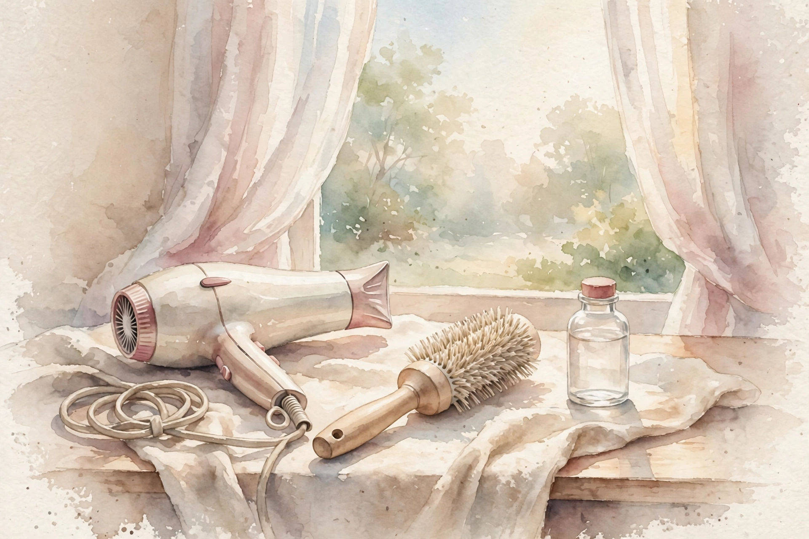

ショートヘアの乾かし方と量の目安

ショートヘアは、乾かす時間が短い分、乾かし方の癖がそのまま仕上がりに出やすい髪型です。施術の現場でも、ショートのお客様には「乾かす順番」の話をよくします。この記事では、順番と量の目安を整理します。
乾かす順番は「根元→全体→毛先」
ショートヘアの乾かし方は、根元が中心です。まず襟足と後頭部の根元、次に側頭部、最後に頭頂部と前髪という順番で風を当てます。根元が乾くと全体の形が決まります。毛先は根元のついでに乾くことが多いため、最後に軽く整える程度で十分な場合が多いです。
分け目は、乾かすときに決まります。いつもの分け目の方向に流しながら乾かすと形が安定します。根元を持ち上げるように乾かすとふんわりした感じに、寝かせるように乾かすとタイトな感じになります。どちらが正解ではなく、その日の仕上がりの希望で使い分けるものです。
量の目安は「表示の半分」から考える
トリートメントやアウトバスのアイテムの量は、髪の総量に比例します。表示の量が長い髪を想定している場合は、ショートでは多すぎることがあります。まず表示量の半分程度から始めて、足りなければ継ぎ足すのが、つけすぎを防ぐ基本です。つけすぎると、乾かした後の重さや、べたつきの感じにつながります。
特に根元にはつけないのが、アウトバスの基本です。毛先から中間に向けてなじませ、根元は手に残った分を軽く通す程度にします。量の考え方は、別記事「アウトバスアイテムの種類と重ね方」とも共通します。
乾かしすぎを防ぐ合図
ショートヘアは乾くのが早いため、乾かしすぎにも注意が要ります。全体が乾いたら、最後は冷風に切り替えて形を整えるのが、現場でも使う仕上げの手順です。触ってみて根元に湿り気がなければ、終わりの合図です。
短い髪は、手順の違いが仕上がりに見えやすい髪型です。順番と量の2点を意識するだけで、朝の仕上がりの安定感は変わってきます。自分の順番を決めておくことが、ショートヘアの時短にもつながります。
ショートヘアは、美容室でのカットからの日数で扱い方が少しずつ変わります。切った直後は形が作りやすく、伸びてくると襟足や耳まわりの収まりが変わってきます。乾かし方の順番は同じでも、風を当てる時間の配分をし直すと、伸びてきた時期にも対応しやすくなります。
朝の寝ぐせ直しも、ショートでは根元が中心です。寝ぐせの部分だけを湿らせ、根元から乾かし直すと、短時間で形が戻ります。全体を濡らし直す必要はありません。別記事「朝の寝ぐせ直しの手順」の考え方は、ショートヘアにそのまま使えます。短い髪は、直す範囲も小さく済むのが利点です。
ショートヘアの量の目安は、髪の量でも変わります。同じショートでも、髪の多い方と少ない方では適量が違います。表示の半分というのは出発点で、最終的には自分の髪の量に合わせて調整してください。調整の記録を残しておくと、美容室でカットした後の量の変化にも対応しやすくなります。また、ショートヘアは伸びるにつれて形が変わるため、量の目安も数週間単位で見直すのが現実的です。カットの周期と、量の見直しの周期をそろえておくと、管理が楽になります。
ショートヘアの仕上がりは、乾かし終えた直後の触り心地で判断できます。根元がさらっとしていて、毛先に重さが残っていないこと。この感触を覚えることが、自分の基準作りです。
乾かす順番に迷ったら、美容室で自分の髪型に合った順番を聞いておくのも方法です。施術者は、その髪型の乾かし方を一番よく知っています。聞いた順番は、メモに残しておくと忘れません。
セラフィナ「ショートは根元が主役。量は少なめから、乾かす順番で形が決まるね」

セラフィナ｜美容の道具箱の案内役
「量と表示が分かれば、美容は失敗しない。」——セラフィナと白猫のモコが、買う前のチェックポイントを案内します。綺麗になりたい気持ちに正直に、でも表示は冷静に読むのが、このサイトの約束です。